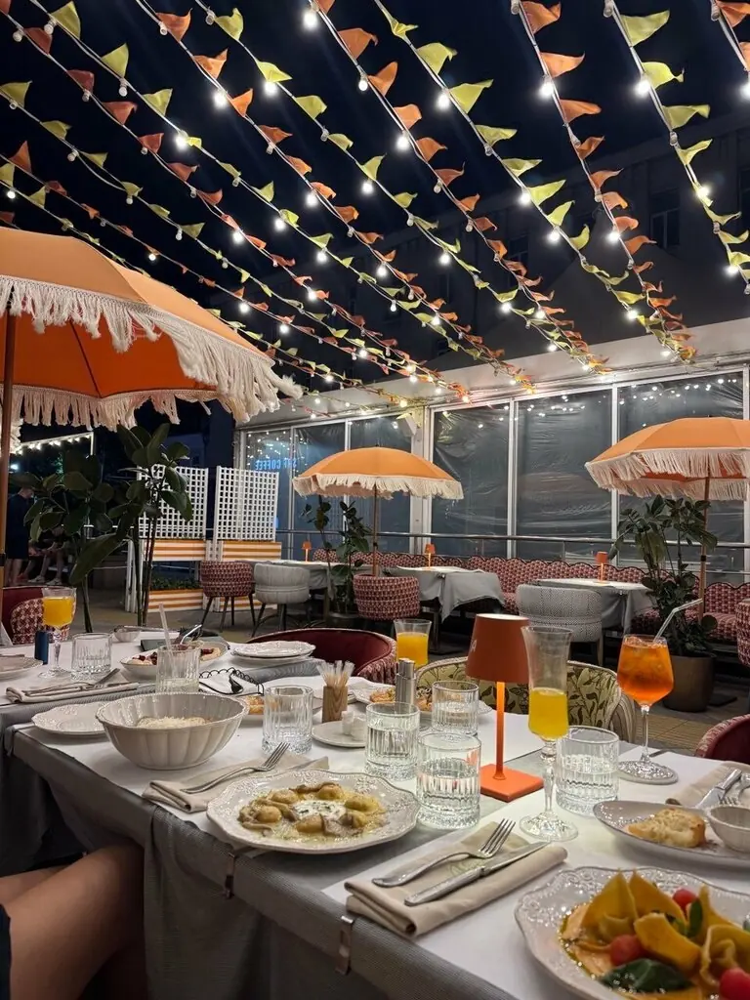
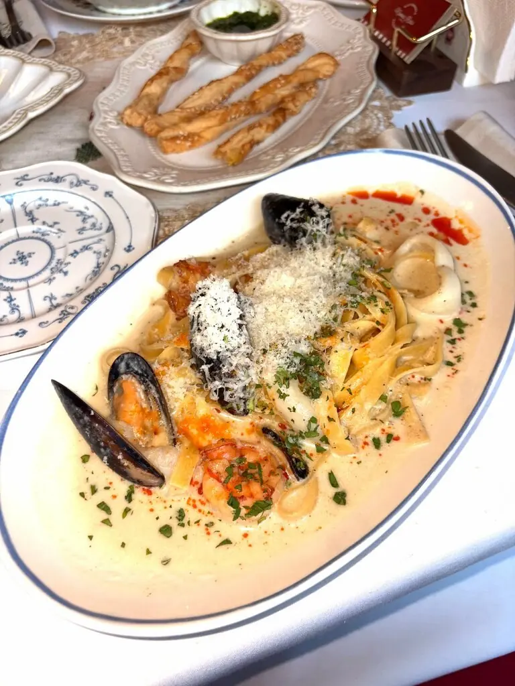
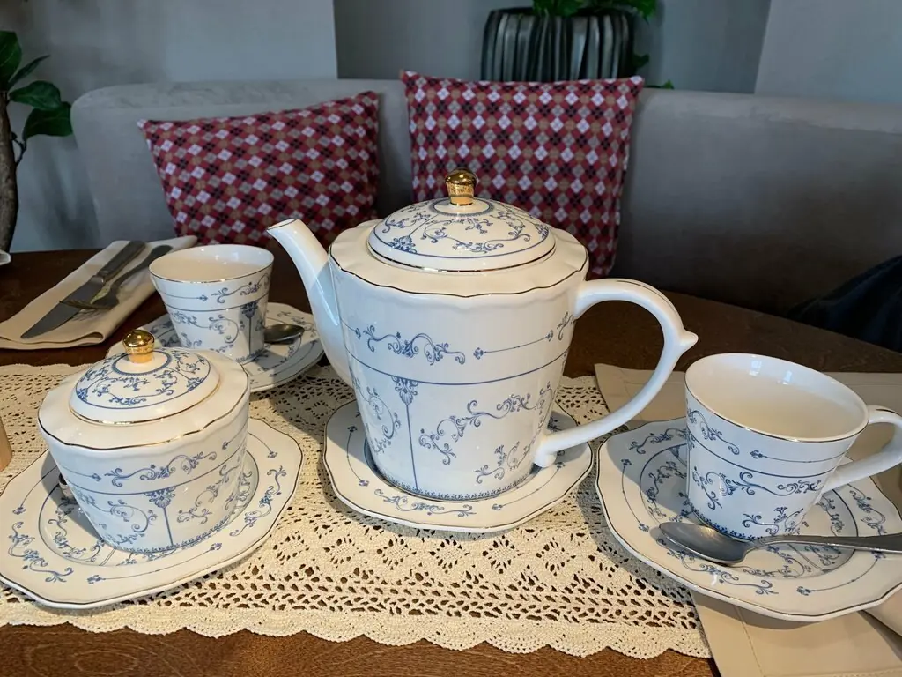
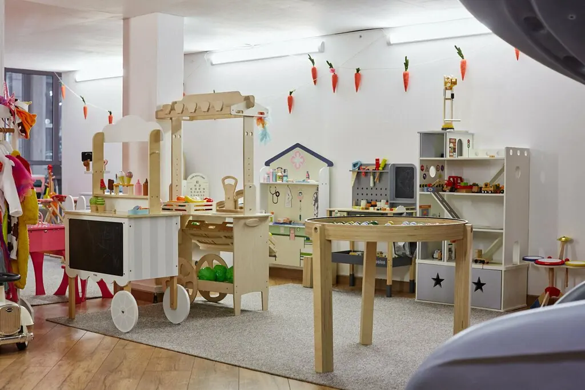
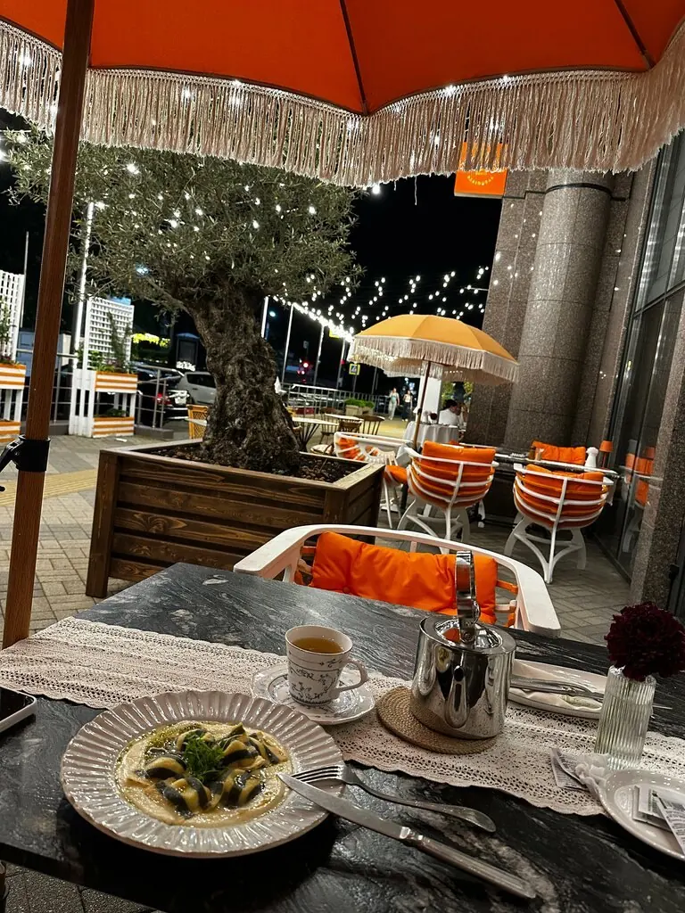
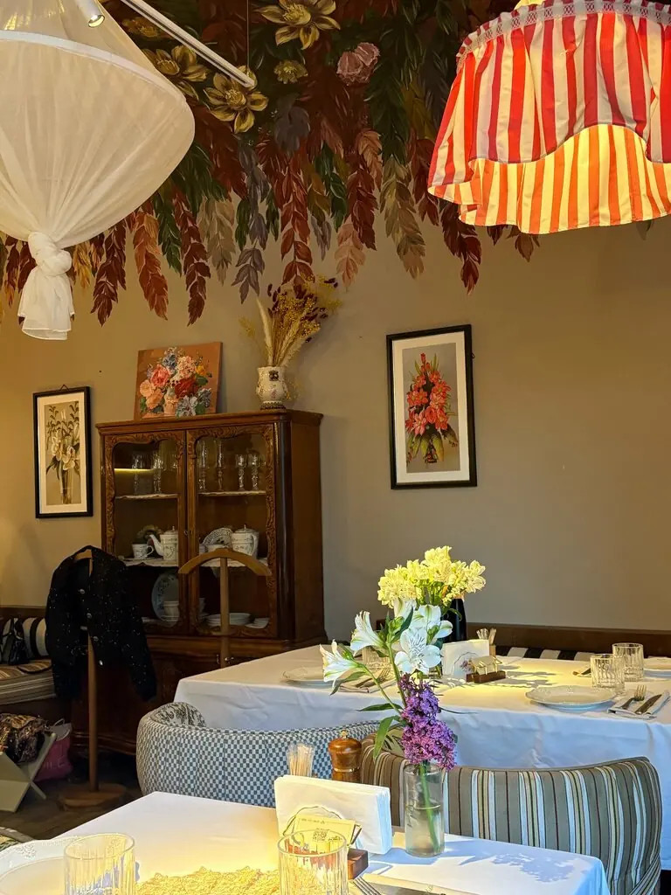
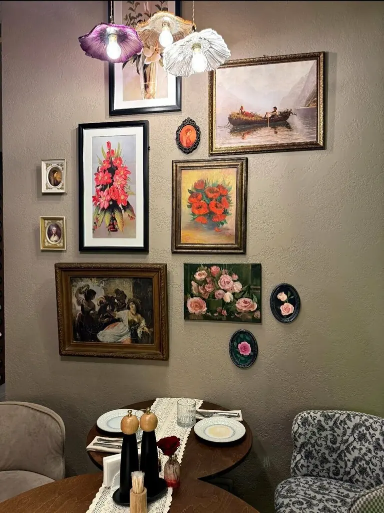
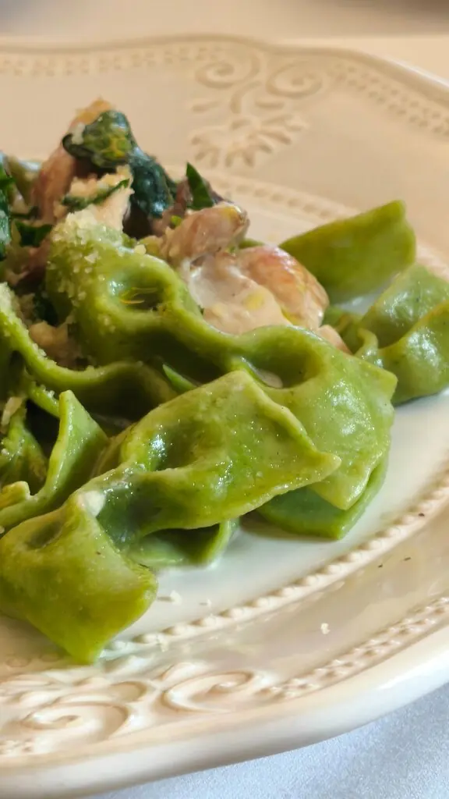
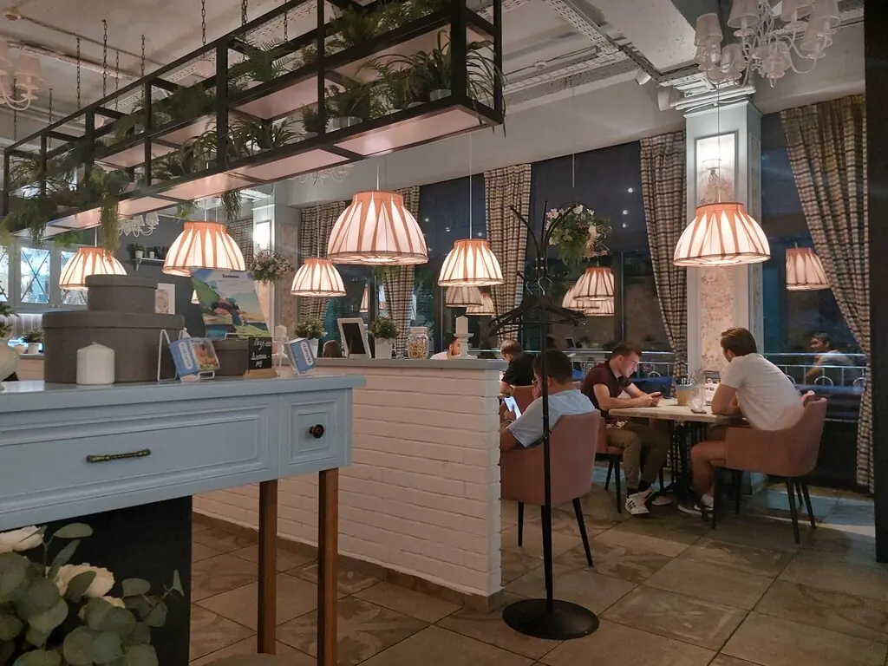

Nonna Rosa
Итальянская кухня, как у бабушки в гостях: большие столы, пицца на тонком тесте и тирамису, за которым едут специально.
4,9 · 125 оценок на картах



За этим и приходят
Записки от тех, кто уже попробовал:
Ассорти тирамису
Гость увидел его в ролике и приехал попробовать.
Десерт-лимон
Мягкий бисквит и холодный сорбет, фирменная подача.
Тартар
«Второй раз пришли из-за него»
Пицца
Тесто тонкое, начинки много.
Грибной суп и паста
Именно их советуют те, кто сам готовит отлично.
Лимончелло
«С ней и день сразу играет другими красками»
Блюда из отзывов гостей. Полное меню с ценами добавим из вашего прайса.

Дети заняты, вы вдвоём
- Большая игровая комната
- Няня присмотрит за малышами
- Детские мастер-классы с шефом
- Детское меню и пеленальный столик
Как дома, только красивее





Говорят гости
Лучшая итальянская кухня в городе! Уютная семейная атмосфера.Alexandra Rudicheva
Спасибо шефу Артуру за детский мастер-класс. Теперь наша Ульяночка умеет готовить!Татьяна Толстокорая
Вкуснейший тирамису. Есть детский уголок и проходят мастер-классы.Вероника Благодарева